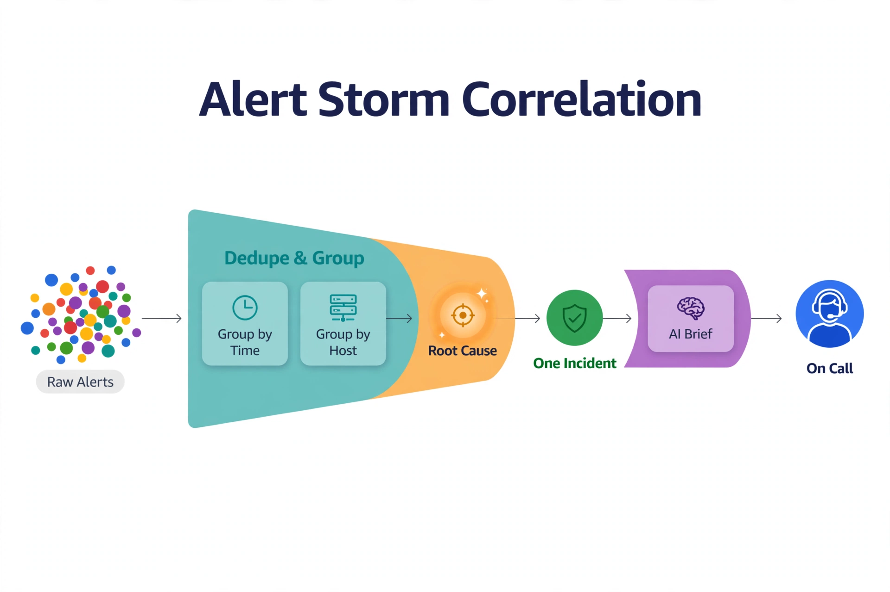

Chapter 34: Intelligent Alerting and Noise Reduction
Alert fatigue is the number-one killer of DBA responsiveness. Not the lack of monitoring — the average SQL Server shop has plenty of monitoring — but the learned behavior that follows months of 3 AM pages for conditions that resolved themselves, batch jobs that always spike CPU, and threshold breaches with no customer impact. DBAs learn to ignore the pager, and then the real incident hides in the noise it trained them to dismiss.
This chapter is strictly about the AI layer on top of alerting — not how to configure alerts, but how machine reasoning reduces their noise: dynamic baselines that replace static thresholds, correlation that collapses alert storms into single incidents, suppression intelligence that learns what "normal" looks like for your workload, LLM-generated incident briefs that replace fifteen cryptic pages with one decision-ready paragraph, and feedback loops that measurably halve non-actionable pages within a quarter.
---
Dynamic Baselines Replace Static Thresholds
The root cause of most alert noise is the static threshold. "Page when batch requests per second exceed 5,000" sounds reasonable until the nightly ETL sustains 12,000 for two hours — every night, on purpose. The threshold cannot distinguish your workload's rhythm from a genuine anomaly, so it pages on rhythm and trains everyone to ignore it.
Dynamic baselines replace the fixed line with a forecast band learned from history. Train a seasonal model on each key counter's history — batch requests/sec, active sessions, lock waits/sec, page reads/sec from sys.dm_os_performance_counters snapshots — and alert only when the observed value escapes the predicted band by a meaningful margin. The ETL spike at 1 AM falls inside the band (the model has seen it 90 times); the same spike at 10 AM blows through the band and pages.
import pandas as pd
import numpy as np
import pyodbc
def build_dynamic_baseline(conn_string: str, counter_name: str,
lookback_days: int = 42) -> pd.DataFrame:
"""
Build an hourly seasonal baseline for a performance counter.
Alert when observed values escape the forecast band.
Assumes counter snapshots stored in dbo.perf_counter_history
(snapshot_time, counter_name, cntr_value).
"""
conn = pyodbc.connect(conn_string)
df = pd.read_sql("""
SELECT snapshot_time, cntr_value
FROM dbo.perf_counter_history
WHERE counter_name = ?
AND snapshot_time > DATEADD(DAY, -?, GETUTCDATE())
ORDER BY snapshot_time
""", conn, params=[counter_name, lookback_days])
conn.close()
df['snapshot_time'] = pd.to_datetime(df['snapshot_time'])
df['dow'] = df['snapshot_time'].dt.dayofweek
df['hour'] = df['snapshot_time'].dt.hour
# Seasonal baseline: median and dispersion per (day-of-week, hour) bucket
baseline = (df.groupby(['dow', 'hour'])['cntr_value']
.agg(['median', 'std', 'count'])
.reset_index())
# Require enough history before trusting a bucket
baseline = baseline[baseline['count'] >= 4].copy()
baseline['upper_band'] = baseline['median'] + 3 * baseline['std'].fillna(0)
baseline['lower_band'] = (baseline['median']
- 3 * baseline['std'].fillna(0)).clip(lower=0)
return baseline
def check_against_baseline(baseline: pd.DataFrame, observed: float,
dow: int, hour: int) -> dict:
row = baseline[(baseline['dow'] == dow) & (baseline['hour'] == hour)]
if row.empty:
return {'verdict': 'insufficient_history', 'alert': False}
upper = float(row.iloc[0]['upper_band'])
median = float(row.iloc[0]['median'])
breached = observed > upper
# Severity scales with distance above the band, not the raw value
severity = max(0.0, (observed - upper) / max(median, 1.0)) if breached else 0.0
return {'verdict': 'breach' if breached else 'within_band',
'alert': breached,
'severity': round(severity, 2),
'band_upper': round(upper, 1),
'baseline_median': round(median, 1)}Two subtleties make this work in practice. First, severity scales with distance above the band, not the raw value — a counter at 2x its band is more urgent than a counter at 1.1x, regardless of absolute magnitudes. Second, buckets with insufficient history abstain rather than guessing. A new bucket (fresh daylight-saving shift, a new batch schedule) should log "insufficient history" and fall back to a conservative static threshold — never silently assume.
---
Correlating the Storm into One Incident

Read it left to right as a funnel. The scattered dots are the raw alert storm — every dot a separate page that would have woken someone up. The teal Dedupe and Group stage collapses them by time window and host, so one failing component stops producing fifty copies of the same symptom. The amber Root Cause node is the correlation engine's best candidate — the blocking chain head or the earliest anomaly in the group. Everything downstream of that is singular: one incident, one AI-generated brief with the evidence attached, one human paged. The key insight: intelligent alerting isn't about smarter thresholds, it's about changing the unit of work from the alert to the incident.
Even with dynamic baselines, genuine incidents produce alert storms: one blocking chain generates forty blocked-process alerts, a failover triggers connectivity alerts from every application tier, a storage slowdown pages on every database simultaneously. The human cost is not the first alert — it is the other thirty-nine burying the context the on-call DBA needs.
Alert correlation collapses the storm. Group incoming alerts into incidents using shared dimensions: time proximity (within a rolling window), shared objects (same database, same blocking session, same wait type), and causal direction. A simple, effective first implementation: when a new alert fires, attach it to an open incident if it shares the database and blocking-session-id or wait-type signature within the last 15 minutes; otherwise open a new incident. Then rank the root-cause candidate — the alert whose metrics deviated first chronologically is usually closest to the cause.
For the blocking-chain case specifically, the correlation is deterministic, not ML: walk sys.dm_exec_requests.blocking_session_id to the head blocker, and emit exactly one incident naming the head blocker's session, query shape, and the count of blocked sessions behind it. Forty alerts become one incident with forty victims listed inside it. Your on-call DBA's first glance tells them everything; the old behavior told them nothing forty times.
For less deterministic storms, cluster alerts on feature vectors (time bucket, database, object, wait type, severity trajectory) with a simple density-based clustering pass every minute. The clusters that survive are your incidents. This does not need to be perfect — grouping that is right 90% of the time still eliminates the vast majority of storm noise.
---
Suppression Intelligence: Learning What's Normal
Dynamic baselines handle metric rhythms. Suppression intelligence handles event rhythms: the known batch job that always elevates lock waits, the Sunday index maintenance that always spikes IO_COMPLETION, the deployment window where brief blocking is expected. Traditionally these become static suppression rules maintained by hand — brittle, forgotten, and wrong after every schedule change.
The AI version learns suppression from outcomes. Every alert carries features: time, day-of-week, active SQL Agent jobs (from msdb.dbo.sysjobs and job history), recent deployments, wait signature. Every alert also gets a label eventually: the DBA's thumbs-up/down, or "auto-resolved with no action." Train a classifier on alert-features → was-actionable. Alerts the model confidently classifies as non-actionable get suppressed — logged, visible on the dashboard, but not paged.
The confidence gate is everything here. Suppress only when the model's confidence is high (start at 0.9); low-confidence "probably noise" alerts still page but tagged as likely-noise so the DBA triages them last. And every suppression decision is logged with its features and confidence, so when the model wrongly suppresses a real incident, you have the exact record needed to add it as a training case. Suppression without an audit trail is just a fancier way to miss outages.
---
LLM Incident Briefs: Fifteen Alerts, One Paragraph
Correlation groups alerts; the LLM brief makes the group understandable. When an incident opens (or when correlated alerts cross a severity threshold), the pipeline assembles the correlated alert set plus a diagnostic snapshot — top wait deltas, the head blocker, memory-grant state — and asks the model for one decision-ready brief:
INCIDENT_BRIEF_PROMPT = """
You are a SQL Server on-call assistant. You receive a set of correlated alerts
and a diagnostic snapshot for a single incident. Write an incident brief for
the on-call DBA who was just paged.
Respond as JSON:
{
"headline": "<one line: what is happening, in plain language>",
"likely_cause": "<one sentence, citing specific evidence values>",
"blast_radius": "<databases, sessions, or applications affected>",
"first_action": "<single most useful next step, as a concrete check or query>",
"confidence": <0.0-1.0>
}
Rules:
- Cite actual values from the input (session IDs, wait types, counts).
- If evidence is ambiguous between two causes, say so and give the
discriminating check as first_action.
- Never invent session IDs, object names, or metric values.
"""
# Example of the brief this produces for a blocking storm:
# {
# "headline": "Blocking chain on SalesDB: session 214 blocking 37 sessions for 6+ minutes",
# "likely_cause": "Session 214 (program 'NightlyReport') holds X locks on
# Sales.Orders while waiting on IO_COMPLETION; PAGELATCH waits
# across 37 blocked sessions confirm the chain.",
# "blast_radius": "SalesDB only; 37 blocked sessions, all from reporting app tier",
# "first_action": "Check what session 214 is waiting on:
# SELECT wait_type, wait_time FROM sys.dm_exec_requests
# WHERE session_id = 214",
# "confidence": 0.88
# }Compare the DBA experience: the old page was fifteen texts saying "blocked process threshold exceeded" with no context. The new page is one message with a headline, a likely cause citing real session IDs, the blast radius, and the single most useful next query. Mean time to acknowledge drops because the DBA starts from understanding instead of from fifteen tabs of investigation. The brief does not replace diagnosis — it replaces the first ten minutes of it.
---
Feedback Loops That Actually Reduce Noise
Every mechanism in this chapter improves only if outcomes flow back into training. The feedback loop has three inputs: explicit ratings (thumbs up/down on each alert and brief — make this one tap in the paging tool, not a separate form nobody fills out), implicit signals (alert acknowledged but no action taken within 30 minutes is a soft "not actionable"; alert auto-resolved before acknowledgment is a strong one), and incident linkage (alerts that preceded a real incident get labeled actionable retroactively).
Retrain the suppression classifier weekly on the accumulated labels. Track the trend that justifies the whole program: alert precision (fraction of paged alerts that were actionable), mean time to acknowledge, and pages per week. A realistic target: halve non-actionable pages within 90 days while holding precision above 80%. Publish the trend to the team — nothing sustains a feedback loop like visible proof that the ratings are working.
One caution: feedback loops can learn your team's bad habits. If DBAs routinely thumbs-down legitimate early-warning alerts because "it always resolves itself," the model learns to suppress the warnings that precede real incidents. Review suppressed-but-near-miss cases monthly: alerts the model suppressed where an incident followed within the hour. Those are the most valuable training cases you have, and the review is a human judgment call the loop cannot make for itself.
---
Routing: The Right Human, First Time
The last mile of intelligent alerting is routing. A perfect diagnosis paged to the wrong person at 3 AM is still a failure — it adds a wake-up, a handoff delay, and a groggy re-triage. Route on two signals: alert class (tempdb pressure goes to whoever owns storage-adjacent issues; Query Store regressions go to the performance owner) and resolution ownership history (who actually resolved this class of incident the last three times).
Keep it simple and auditable: a routing table mapping incident classes to primary and secondary owners, updated quarterly from resolution history, with on-call load balancing so one person does not absorb every page in a storm week. Escalate on no-acknowledgment with the incident brief attached — the secondary owner starts from the brief, not from zero. Intelligent routing will not make headlines, but it quietly removes the most demoralizing part of on-call: being woken for something you cannot fix, while the person who can sleeps.
---
Key Takeaways
QueryOptimizer — Self-Hosted SQL Performance Workbench
EXPLAIN visualizer · Index advisor · Slow query dashboard · SQL Server
Test yourself on this chapter
5 questions · instant scoring · explanations included